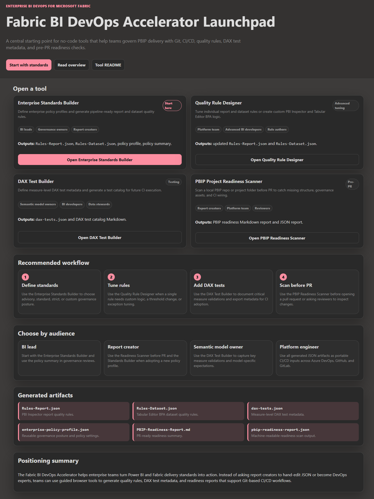
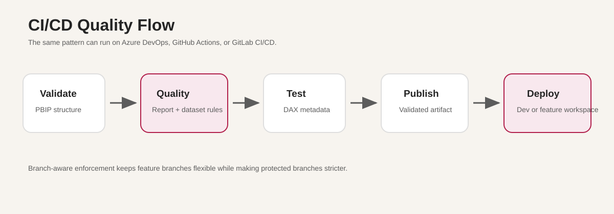
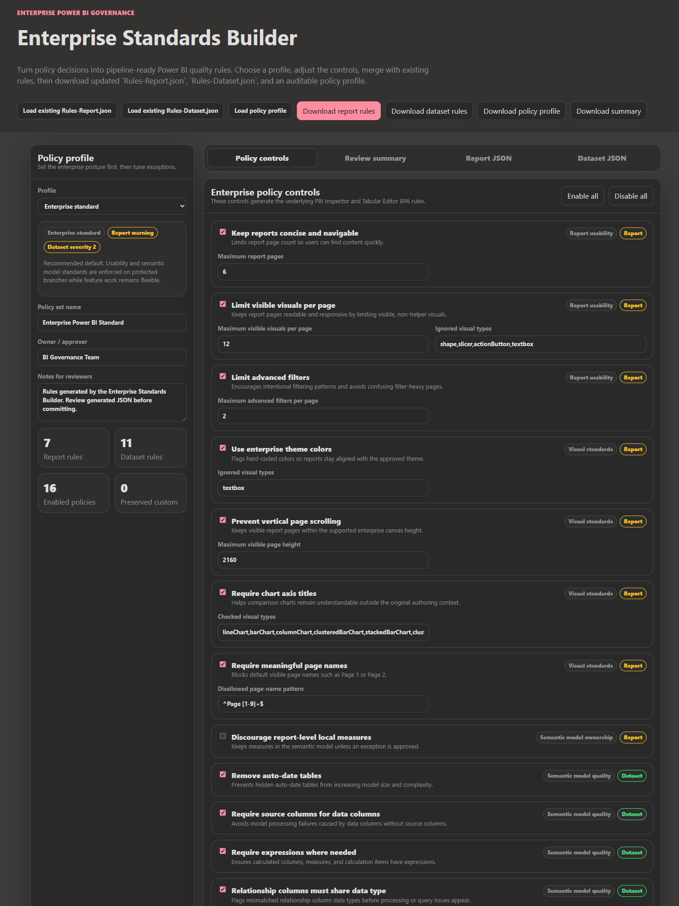
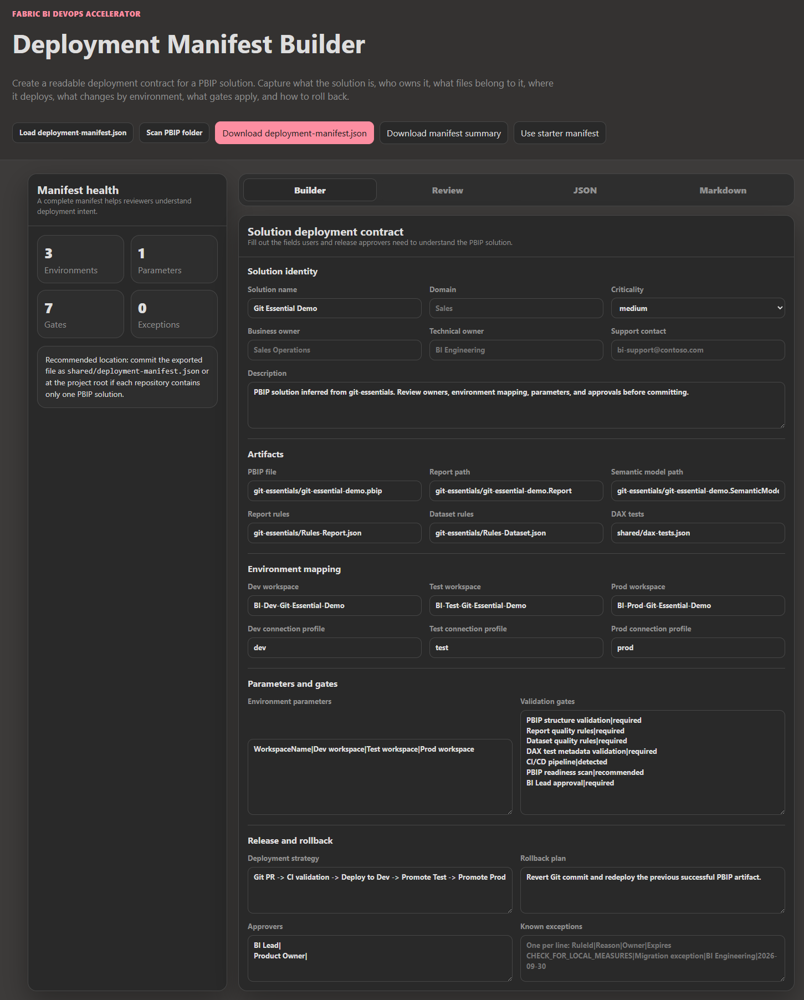
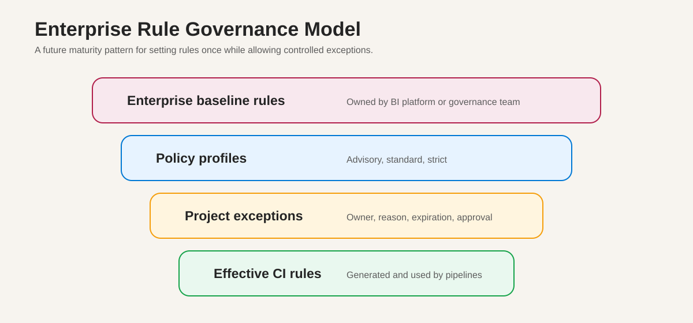
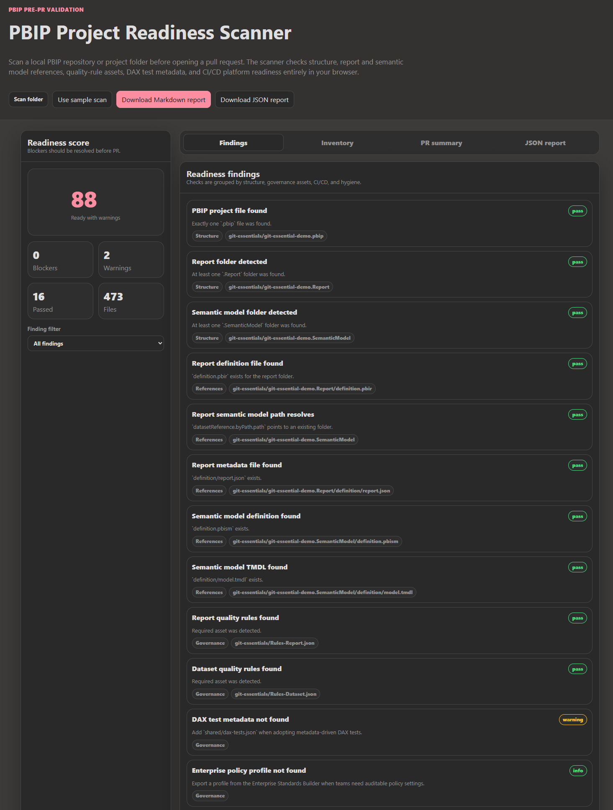

How Microsoft Fabric Teams Can Deliver Analytics Faster Without Losing Control
Modern analytics teams are under pressure to move faster, reduce manual work, and keep governance intact. That is where Enterprise BI DevOps with Microsoft Fabric fits in. It gives organizations a practical way to bring Git integration, CI/CD automation, and branch-aware quality controls into Microsoft Fabric and Power BI delivery.


At its core, the solution is not just a pipeline. It is a practical operating model for treating Power BI and Fabric artifacts like governed engineering assets.

For developers, the benefit is straightforward: changes can be validated earlier, tracked more clearly, and promoted with less friction. Instead of relying on manual checks and ad hoc handoffs, teams can use reusable validation assets and automated workflows that support a cleaner path from development to release.

The no-code tools help teams define standards without forcing every report creator to hand-edit JSON. Governance owners can generate report and dataset rules from policy profiles, while advanced users can tune individual checks when a project has a legitimate exception.
For operations teams, the value is predictability. Deployment steps become more consistent, branching rules can be aligned to release policy, and promotions across environments are easier to manage. That means fewer surprises, fewer manual errors, and a more reliable delivery process.

Deployment manifests make release intent easier to review. Instead of relying only on tribal knowledge, teams can document ownership, artifacts, target environments, approvals, rollback notes, and release assumptions in source control.
For CIOs and IT leaders, the outcome is stronger governance at scale. Standardized quality rules, deployment patterns, and repeatable pipeline behavior help reduce release risk while supporting organizational consistency. The result is a model that can grow with the business without turning every release into a one-off effort.


The readiness scanner gives teams a pre-PR checkpoint. It helps identify missing structure, missing governance assets, or project hygiene issues before the work reaches formal review.
Enterprise BI DevOps with Microsoft Fabric is not just about tooling. It is about creating a practical operating model for analytics delivery that improves speed, control, and confidence across the organization.
What the solution helps standardize
- Source-controlled PBIP project structure.
- Branch-aware report and dataset quality rules.
- DAX test metadata for critical measures.
- Deployment manifests for reviewable release intent.
- Pre-PR readiness checks.
- CI/CD patterns that work across Azure DevOps, GitHub Actions, and GitLab CI/CD.